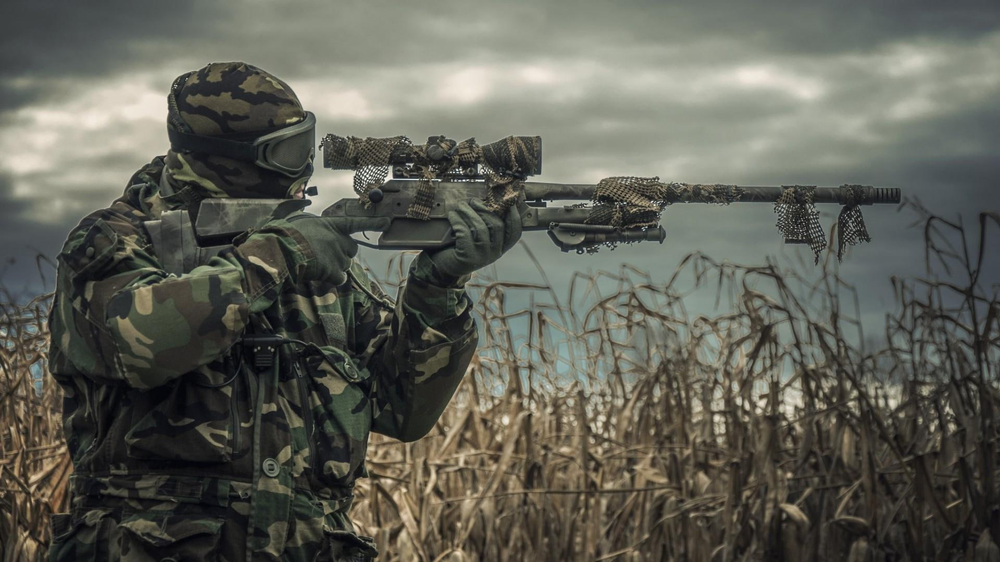

eventos noturnos
saga resident evil
escolha entre ser um zumbi ou um humano!
atenção humanos!!!!!
um hit dos zumbis te mata ,então sugiro que você se esconda e mire na cabeça dos zumbis
-
sexta-feira 13
"Eu ouvi dizer que existem jovens em um lago?"
isto mesmo ,assim como no jogo e nos filmes ,Jason vai pegar aqueles que estão no local de sua morte como vingança pelo que sofreu
um pouco da historia para você:
"Voorhees teria se afogado em 24 de junho de 1957 aos 11 anos, em Crystal Lake,
por negligência dos monitores que cuidavam das crianças acampadas ao redor do lago."
será Que os adolescentes vão sair desta vivos ou o jason vai matar-los?
black
entre na vida de Kellar e encare a frota inimiga como se a vida de todo seu esquadrão dependesse disto.
mate ou seja preso . Quem terá a coragem de ser o comandante da operação?
Missão Imposivel
O time que chegar com mais refens salvos ganha!
mata-pombo modo extremo
eventos diurnos
-
captura de ponto
um local para se dominar dois times querendo ele quem vai ganhar?
CS:GO
"É melhor ser temido a ser amado"(Nicolau Maquiavel) - O Príncipe
death match FFA
-
jogo de armas
a cada kill uma arma nova ,para ganhar basta realizar uma rendição depois de ter feito a kill com a glock
eliminação
WW2
eventos personalizados
Não encontrou em nossa lista um evento ,crie seu esquema de evento e traga para nós ,valores especias!
(observação:pedimos que verifiquem disponibilidade do campo em até 3 semanas antes para mudanças no campo ; os valores são passados para o representante da negociação)